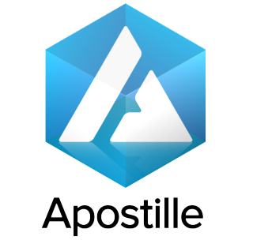
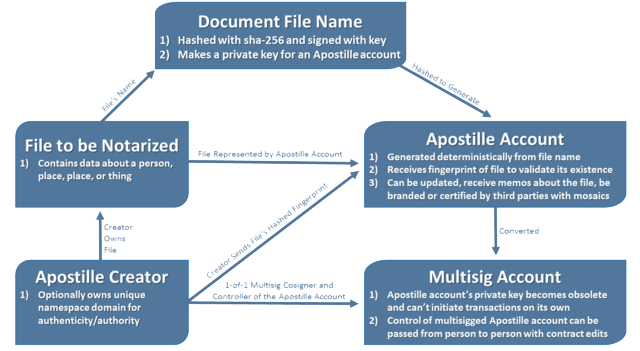
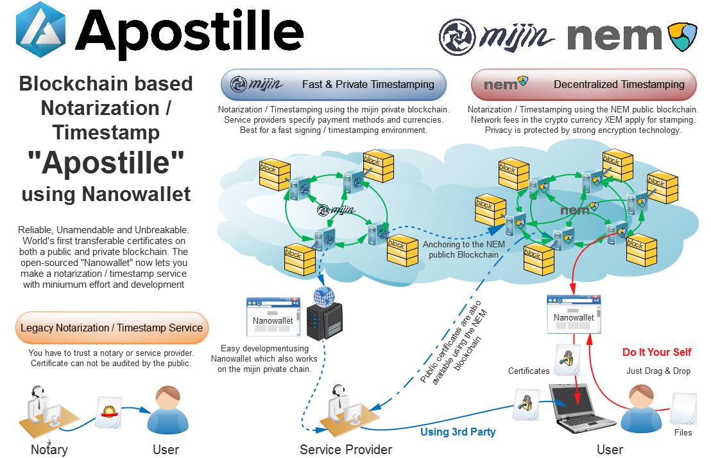
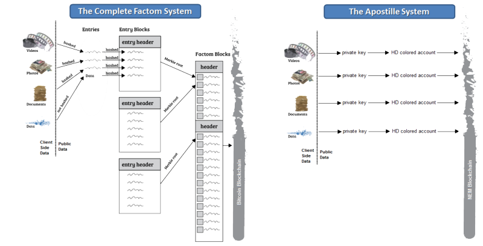

Kryptowaluta jest odrobinę skomplikowana dla przeciętnego człowieka. Warto więc poświęcić chwilę, aby omówić pewne podstawowe pojęcia w NEM.
Po pierwsze, rozpoczniemy od wyjaśnienia, czym jest "Blockchain". Następnie przejdziemy do wyjaśnienia "Zbierania"("Harvesting") i idei algorytmu "Dowodu Znaczenia"("Proof Of Importance"). Na koniec mamy nadzieję rzucić trochę światła na niektóre z ciekawych i innowacyjnych funkcji, które mamy w naszej platformie Blockchain.
"Blockchain" jest trochę jak kawałek papieru w książeczce czekowej, który pozwala śledzić wszystkie zmiany na rachunku bankowym. NEM "Blockchain" śledzi ile wydano, z kim zawarto transakcję, którego dnia, a nawet śledzi dokładny czas transakcji. Teraz wyobraźcie sobie, że wszyscy na świecie korzystają wspólnie z takiego rachunku. Są w nim zapisane operacje każdej osoby, która z niego korzysta. Jeśli dokonasz zmian, każdy może je zobaczyć, ale można dokonywać zmian jedynie, jeżeli wszyscy zgadzają się, że ta zmiana rzeczywiście miała miejsce. Każdy w dowolnym momencie ma do niego wgląd i może upewnić się, że wszystko się zgadza. Tak więc wszyscy zgadzają się, że ten kawałek papieru ma rację. Zwykle "Blockchain" śledzi kto posiada pieniądze i jakie transakcje są dokonywane pomiędzy użykownikami. W NEM to wciąż prawda - ale NEM śledzi również inne rodzaje transakcji, o których będzie mowa na końcu tego bloga.
W NEM Twój komputer obserwuje "Blockchain". Gdy komputer widzi, że ktoś chce dokonać transakcji, mówi o tym kolejnemu komputerowi. Potem wiadomość przekazywana jest kolejnym komputerom, aż w końcu wszyscy wiedzą o transakcji. Następnie każdy może się zgodzić z tym, że ktoś wysłał część swoich pieniędzy, a ktoś inny stał się nowym właścicielem tych funduszy. Podczas gdy Twój komputer uczestniczy w zatwierdzaniu wszystkich przelewów dokonywanych w sieci, ma szansę otrzymać w zamian opłaty transakcyjne za te przelewy. Czy to nie wspaniałe? Darmowe pieniądze! Jest to nazywane "Zbieraniem"("Harvesting"). Jest jeden haczyk - można rozpocząć "zbieranie" dopiero gdy posiadasz odpowiednią "ważność"(minimum 10 000 usankcjonowanych xem na swoim koncie). Zapobiega to nadużyciom i oszustwom wobec pozostałej części grupy.
"Saldo Usankcjonowane" to ilość funduszy na Twoim koncie, które znajdują się tam od pewnego czasu. Stają się "usankcjonowane" w ciągu 30 dni. Kiedy masz odpowiednio dużo "usankcjonowanych" funduszy, zwiększa się Twoja ważność wobec grupy. Aby konto uzyskało odpowiednią ważność, osoba musi posiadać co najmniej 10 000 xem które zostały "usankcjonowane". Jeśli masz mniej niż 100 000 xem, potrwa to dłużej niż jeden dzień aby uzyskać odpowiednio dużo usankcjonowanych środków, a cały proces sankcjonowania wpłaconych środków trwa 30 dni. Jeśli masz więcej niż 100 000 xem, zajmie to tylko 24 godziny. Jaka jest przyczyna takiego zabezpieczenia? Pomaga to zachować bezpieczeństwo sieci NEM i zapobiega atakom na tej płaszczyźnie.
"Dowód Ważności" jest sposobem na zapewnienie, że wszystkie komputery w sieci zgadzają się ze sobą i pomaga zdecydować, kto może "zbierać" bloki z opłatami transakcyjnymi. Pomaga to zabezpieczyć sieć przed hakerami i zapewnia dobre działanie sieci NEM. Jest to główny czynnik zapewniający, że informacje w Blockchain takie jak ilość pieniędzy jakie dana osoba posiada, są prawdziwe. "Dowód Ważności" pomaga upewnić się, że każda osoba korzystająca z NEM może zaufać innym i powstrzymuje ludzi przed wydaniem więcej niż posiadają na koncie. Zastosowane formuły matematyczne przetwarzają informacje o koncie, aby zdecydować, jak ważna dla grupy jest dana osoba. Im większą masz ważność, tym większe masz szanse na uzyskanie opłat transakcyjnych pozostawionych przez innych użytkowników podczas 'zbierania' bloków! Oznacza to, że ludzie chcą mieć odpowiednio wysoką ważność, aby być bardziej wiarygodnym! Istnieje jeszcze kilka rzeczy, które decydują, jak dużą ważność ma Twoje konto. Twoje "Usankcjonowane Saldo", to do kogo wyślesz pieniądze, to jak często wysyłasz pieniądze i ile wyślesz są brane pod uwagę przy ustalaniu, jaką ważność ma Twoje konto. Próby sfałszowania tych wszystkich czynników pochłonęłyby więcej funduszy niż wyniosłyby zyski z takiego działania. Najlepsza część? Oznacza to, że zawsze można zaufać osobie z wysoką ważnością.
Kiedy wysyłasz komuś pieniądze, wszystkie aktywne węzły w sieci to widzą i przekazują informację pozostałym. Chcą być "ważnymi" i "zbierają" bloki, ponieważ w ten sposób mają szansę otrzymać pieniądze z opłat transakcyjnych, zapewniając jednocześnie bezpieczeństwo sieci. Teraz, kiedy już każdy wie, że wysłałeś pieniądze, każdy wie również, że ktoś inny otrzymał te pieniądze. Nie można wysłać ich ponownie lub udawać, że nigdy ich nie wysłałeś. Z pomocą "Dowodu Ważności", możemy mieć pewność, że ludzie bezpiecznie przesyłąją między sobą pieniądze. PoI powstrzymuje użytkowników przed oszukiwaniem innych. Oznacza to, że jedynym sposobem, aby dostać darmowe pieniądze jest "zbieranie" bloków.
Do tej pory omawialiśmy przesyłanie pieniędzy wewnątrz NEM, ale tak naprawdę NEM potrafi dużo więcej (to dlatego nazywamy go "Blockchainem 2.0 - Nową Generacją Blockchaina"). Te same zaawansowane obliczenia wykorzystywane do wysyłania pieniędzy mogą być również stosowane dla każdego rodzaju danych, które chcemy przechowywać na naszym Blockchainie! Choć to trochę trudniejsze do zrozumienia dla początkującego, mamy możliwość przechowywania czegokolwiek, począwszy od dokumentów urzędowych, takich jak akty urodzenia, aż do innych aktywów lub udziałów w dużych firmach. NEM można wykorzystać do wysyłania wiadomości szyfrowanych (czyli bezpieczne przesyłanie prywatnych wiadomości!), nieszyfrowanych i wiadomości w systemie szesnastkowym (format komunikatów używanych przez programistów). NEM posiada wbudowany system umożliwiający rejestrację nazw(Namespaces). Nazwy te mogą być wykorzystywane do prowadzenia działalności gospodarczej w oparciu o Blockchain. Posiada również możliwość tworzenia własnych aktywów. Funkcja ta nazywana jest Mozaiką i pozwala na tworzenie wielu różnych rodzajów aktywów o różnych właściwościach. NEM posiada również unikalną funkcję Multipodpisu m-of-n wbudowaną w protokół, który pozwala, aby pojedyncze rachunki posiadały wielu podpisujących(sygnatariuszy), tak jak we wspólnym rachunku bankowym. Przykładem m-of-n może być 2 podpisy z 3 potrzebne do przeprowadzenia transakcji lub 5 z 10. NEM posiada sieć węzłów nazywanych Supernodes. Supernode to serwer, który różni się od zwykłych węzłów sieci tym, że jest szybszy i silniejszy od przeciętnych serwerów wspierających sieć. W związku z tym, że wspierają pozostałe serwery, za swoją pracę otrzymują dofinansowanie ze specjalnego funduszu. NEM ma o wiele więcej funkcji, niż te, które wymieniliśmy powyżej!
Tak więc, jeśli jesteś początkującym - dołącz do naszej bezpiecznej sieci i zostań częścią ekosystemu NEM! Jeśli jesteś programistą poszukującym nowego projektu - mamy bardzo aktywną społeczność developerów, którzy mają masę wspaniałych pomysłów! Zostańcie z nami, spodzewajcie się nowych, ciekawych funkcji w najbliższym czasie! Możesz śledzić nas na Twitterze lub Facebooku(a także na Slack/Telegram), aby dowiedzieć się więcej!
Zawartość strony domowej.
Zawartość strony domowej.
Zawartość strony domowej.
Niedawno został opublikowany nowy NEM Apostille White Paper czyli dokument, który opisuje i demonstruje technologię, za którą stoi zupełnie nowy system uwierzytelniania i dokumentacji danych, natywnie zaimplementowaną w blockchainie NEM.
NEM znajduje się w top 10 blockchainów (wg. kapitalizacji rynkowej) na świecie. Ponadto został uznany przez rząd Chin za jeden z najbezpieczniejszych blockchainów.
Jedną z głównych funkcjonalności jakiegokolwiek systemu Blockchain jest jego niezmienność. To zapobiega nadużyciom i manipulowaniu danymi przez hakerów lub nieetycznie działające jednostki. Ta funkcja jest niezwykle ważna, gdyż zanim narodził się Blockchain, utrzymanie niezmiennych zapisów danych było globalną bolączką (jeśli nie czymś niemożliwym) dla wszelakiej maści informatyków, administratorów baz danych, firm, rządów czy zwykłych ludzi.
W połowie czerwca 2014 roku Factom zaprezentował scenie swój koncept uwierzytelniania oparty o Blockchain, zainspirowany niektórymi inicjatywami zbudowanymi na bazie Bitcoina. Jednak deweloperzy Factom w tamtym czasie nie zaczęli jeszcze nawet fazy produkcyjnej. Factom oddziela warstwę danych (uwierzytelnianie) od warstwy wartości (monet, funduszy, tokenów). Pozwala to wszystkim na uwierzytelnianie danych w osobnym systemie, który jest zakotwiczony w Blockchainie Bitcoina. To właśnie zapewnia niezmienność danych.
Żeby to było możliwe, Factom wymaga Federated Servers i Nodów Blockchaina, które wykonują wszystkie operacje Factom i przesyłają wyniki do Blockchainu Bitcoina co 10 minut. Jednak ten proces nie jest najbardziej przejrzystym i transparentnym rozwiązaniem. Federated Servers są przeklasowywane co każde 4 godziny na zasadzie wyboru przez użytkowników, którzy mają moc głosowania zależną od tzw. Entry Credits, które kupili i użyli w ostatnich 6 miesiącach.
Z logistycznego punktu widzenia, system połączonych nodów nie jest najbezpieczniejszy. Był ogromną innowacją na rok 2014, kiedy jeszcze nawet Ethereum nie zostało wypuszczone na rynek. Jednakże Factom na ten moment po prostu nie może rywalizować z technologicznym postępem ostatnich dwóch lat. Oprogramowanie Factom jest ciągle w fazie Beta, więc używanie go może być bardzo ryzykowne, a firmy chcące z niego korzystać, powinny wstrzymać się do całkowitego potwierdzenia, że jest ono stabilne
Od zawsze istniała potrzeba posiadania taniego i jak najbardziej bezpiecznego systemu uwierzytelniania i dokumentacji danych przez wiele firm i rządów. Do dziś wszystkie rozwiązania nie były wystarczająco dobre, nie mówiąc już o ideale.
Deweloperzy NEM chcieli zbudować Blockchain z rozwiązaniami natywnie wbudowanymi w ich platformę. Tak właśnie stworzyli Apostille, czyli całościowy system uwierzytelniania oparty o blockchain. W tym systemie uwierzytelnione dane nie są statycznie dokumentowane, ale mogą być dynamiczne, przemieszczać się, zmieniać i aktualizować wartości w blockchainie. Firmy używające tego serwisu lub aplikacje na nim budowane mogą same ustalać jak ich konta Apostille mają być zbudowane i jak mają oddziaływać z uprawnieniami nadanymi przez Namespaces, wartością i statusem reprezentowanymi przez cyfrowe aktywa wysłane do danego konta, jak i informacjami przesłanymi w formie notatek. Ponadto możliwe jest opcjonalne dostosowanie otwartoźródłowego systemu Apostille, aby zmienić strukturę aplikacji w celu jak najlepszego wykorzystania powyższych cech.
Główną innowacją usługi notaryzacyjnej Apostille jest to, że nie robi jednorazowej dokumentacji fingerprintu (pewnego rodzaju spisania danych), ale łączy go z informacjami z konta użytkownika i tworzy dla niego specjalny, unikatowy klucz prywatny. Ten prywatny klucz, przypisany do danego pliku, jest użyty do stworzenia hierarchicznego konta HD (HD - hierarchical deterministic). Później system tworzy fingerprint dokumentu haszując zawartość danego pliku i podpisując ten hasz kluczem prywatnym użytkownika. Podpisany fingerprint wysyłany jest w transakcji do konta HD stworzonego z klucza prywatnego danego pliku. To konto HD zawiera teraz tzw. metadatę (dane, które opisują i dają informacje na temat innych danych) oraz wspomniany fingerprint, więc można powiedzieć, że zostało “pokolorowane” danym, wysłanym plikiem.
Ważną kwestią odnośnie NEM Apostille jest to, że te funkcje są natywnie zaimplementowane w blockchain, więc nie wymagane jest żadne zaufanie. NEM Apostille jest w etapie produkcji, więc nie trzeba martwić się o niestabilność i ryzyko związane z używaniem wersji beta. Apostille można używać za pomocą oficjalnego portfelu NEM, o nazwie NanoWallet.
Następna zaletą technologii NEM jest to, że jest także używana na łańcuchach technologii prywatnych blockchainów Mijin, stworzonej przez Tech Bureau. Łańcuchy Mijin używają tych samych API (Application Programming Interface) co łańcuch NEM. Dzięki temu zyskuje on na zaletach jakie oferuje NEM, bo też może korzystać z serwisu Apostille, z tym, że oferuje niezwykle wysoką wydajność co do liczby transakcji na sekundę liczoną w tysiącach, przy jednoczesnym zaniechaniu opłat transakcyjnych dla konsumenta. Łańcuch Mijin jest prowadzony przez prywatny biznes, więc konsumenci muszą ufać firmie udostępniającej prywatny łańcuch. Lecz jeśli jest podłączymy go do publicznego łańcucha NEM, może zapewnić całkowitą wiarygodność i użytkownicy mają pewność, że historia danych nie została naruszona.
Przechodząc do konkluzji całego artykułu, możemy powiedzieć, że Factom był dobrym pierwszym podejściem do uwierzytelniania dokumentów, lecz jego implementacja nie jest gotowa na problemy prawdziwego przemysłu. Polega on również na różnych protokołach, które muszą być ze sobą ściśle skoordynowane, pozostawiając większe pole dla błędów.
NEM z drugiej strony stworzył rozwiązanie już u swoich podstaw. Oferuje dodatkowe, wbudowane funkcje użyte do stworzenia Apostille w naturalny, efektywny i przetestowany sposób.
